Discover
A small accessory with a clear job: cut the waiting time for commercial cleaners.
One battery at a time
The existing stand charges a single battery. For a commercial cleaning team, that means a second battery sits waiting instead of charging. The new dock had to fix that, and look like it belonged in the Dirt MONSTER range.
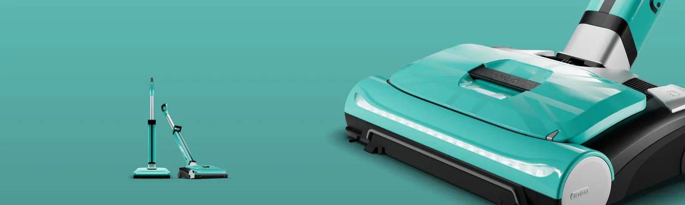
Define
An urgent timeline meant committing to a direction quickly and testing it straight away.
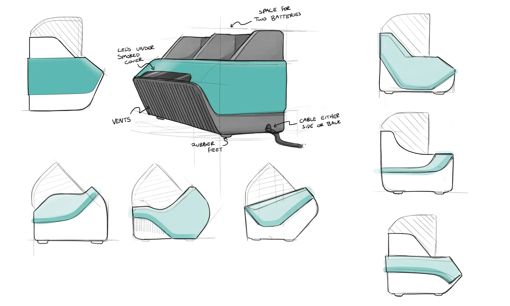
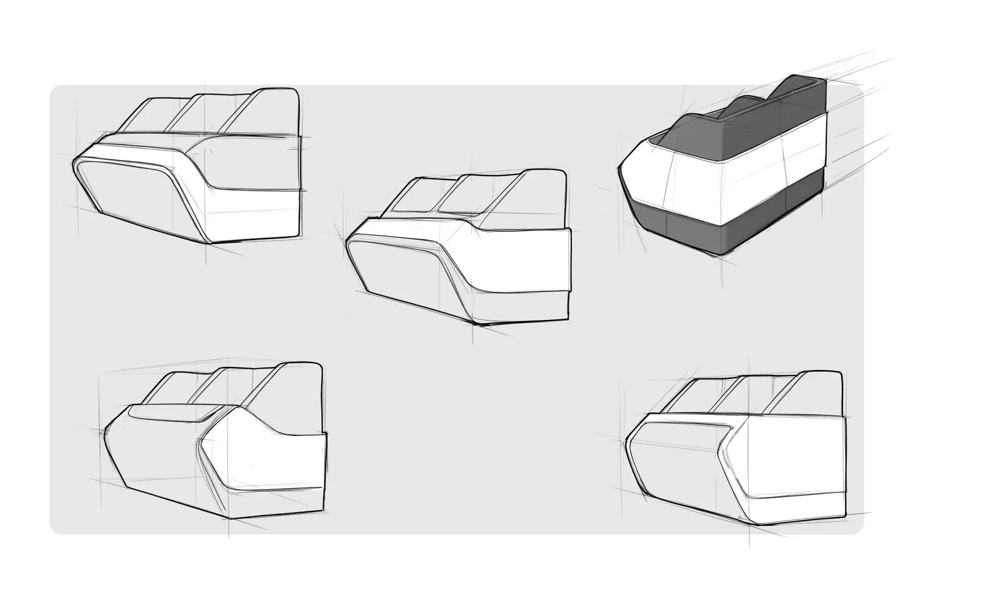
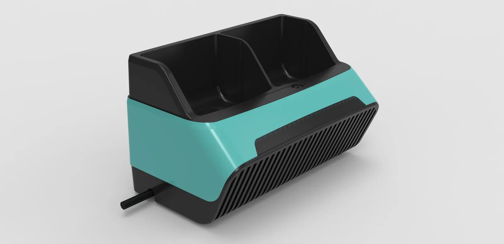
Concept to CAD in two days
Because the project was urgent, the concept and initial CAD took two days.
The model was 3D printed in house, and I sent the CAD to the Dirt MONSTER's manufacturer so they could print, test and review it in parallel.
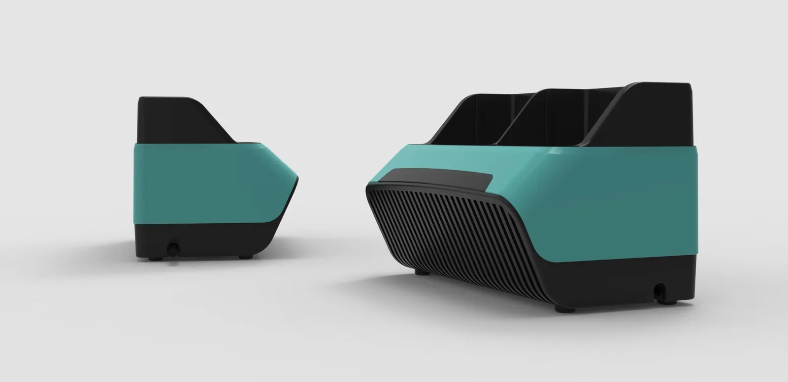
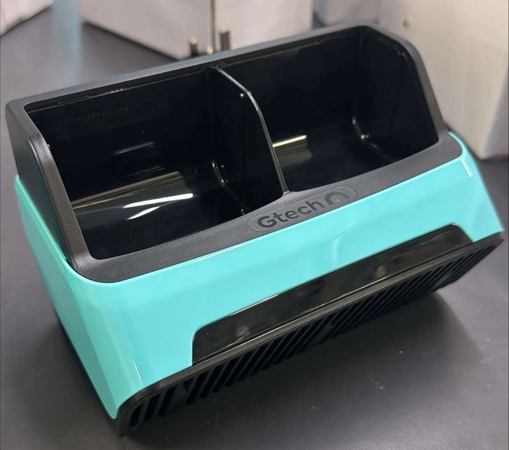
Develop
Feedback from our printed model and from the factory drove three important changes.
Colour, texture and draft
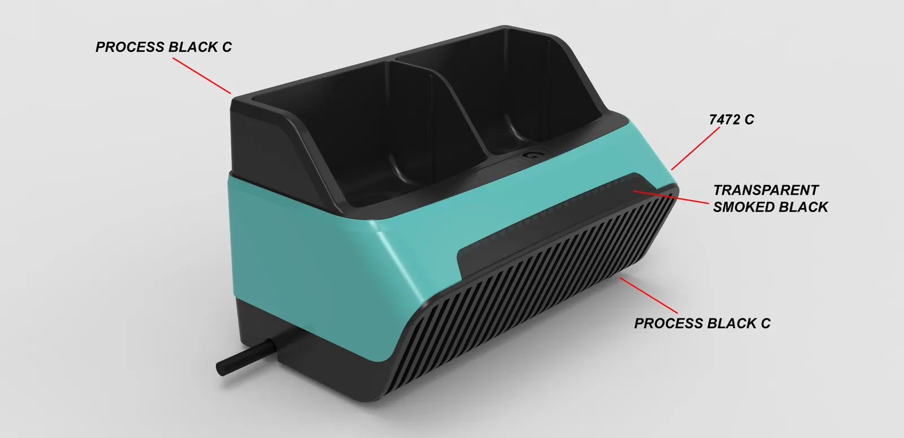
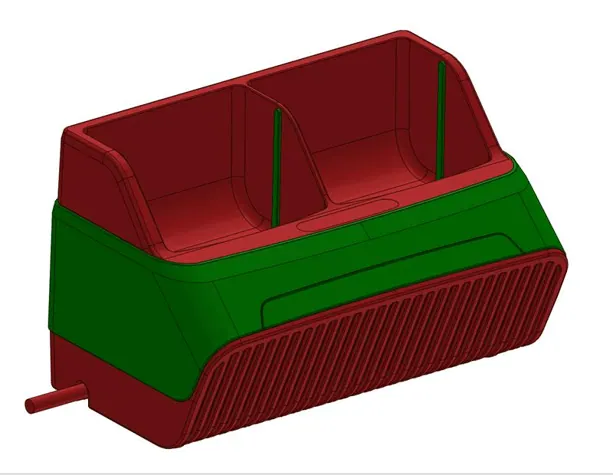
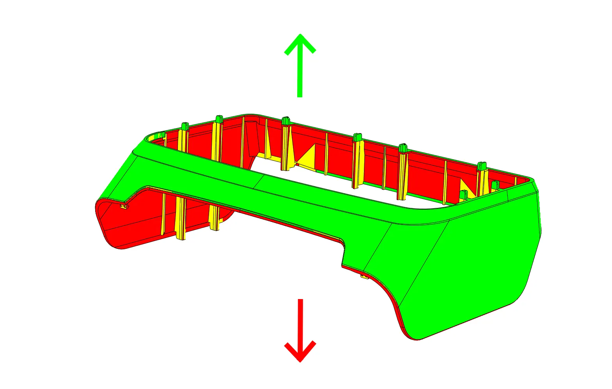
Responding to feedback
I adjusted the CAD in response to feedback from our printed model and from the factory.
Split the top part in two to protect the design
- Problem
- The tool needed to form the black housing around the battery would have been too thin.
- Options
- Reduce it to a consistent wall thickness, or make the sides bigger. Both would have hurt the aesthetics.
- Decision
- Split the part into two, so it could be tooled without changing its appearance.
Resolved with extra rear vents and fans.
Resolved by partially blanking three of the front vents and adding screw bosses.
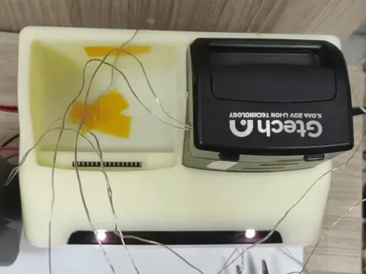
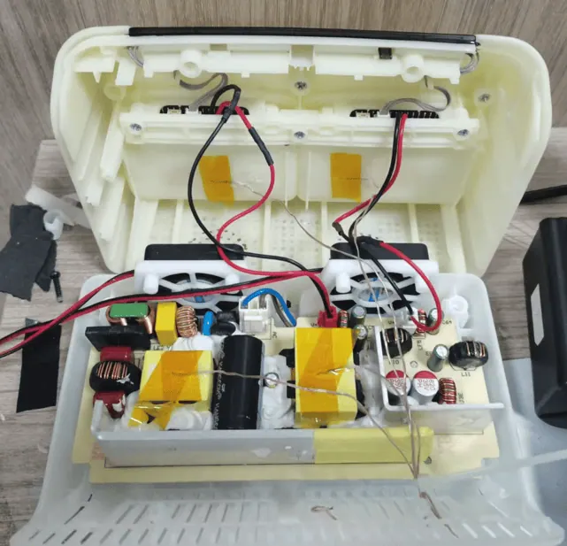
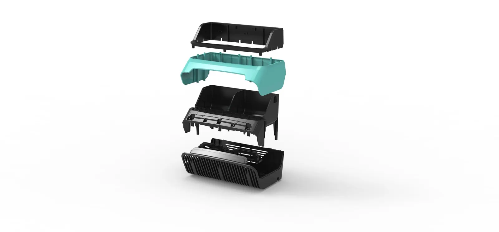
Deliver
From production CAD to approved injection-moulded parts.
Production CAD
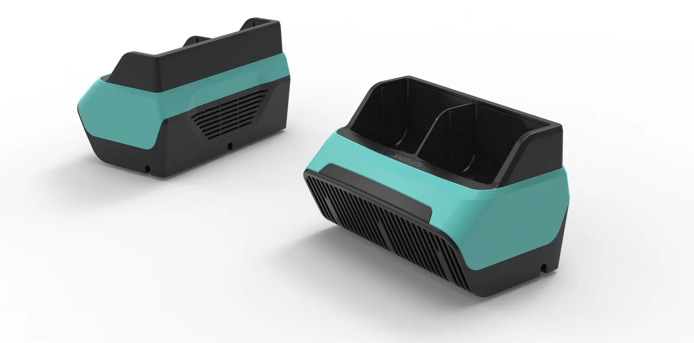
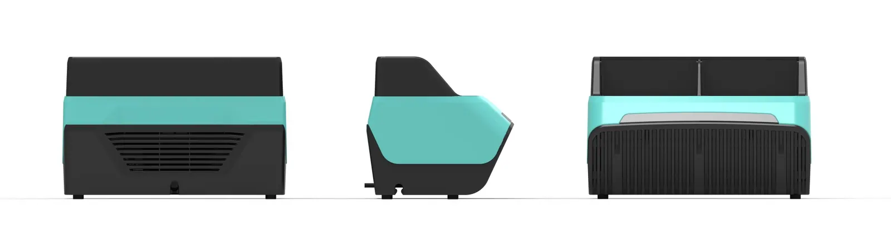
First-off tool
The first injection-moulded samples were inspected for dimensional accuracy, cosmetic quality and assembly.
Minor refinements to gating, surface finish and tolerances were made before production approval. The dock is now in production.
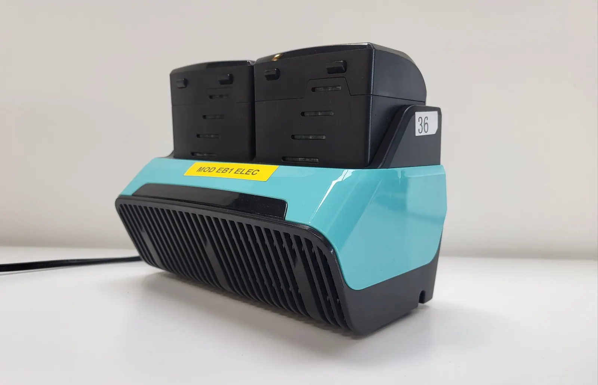
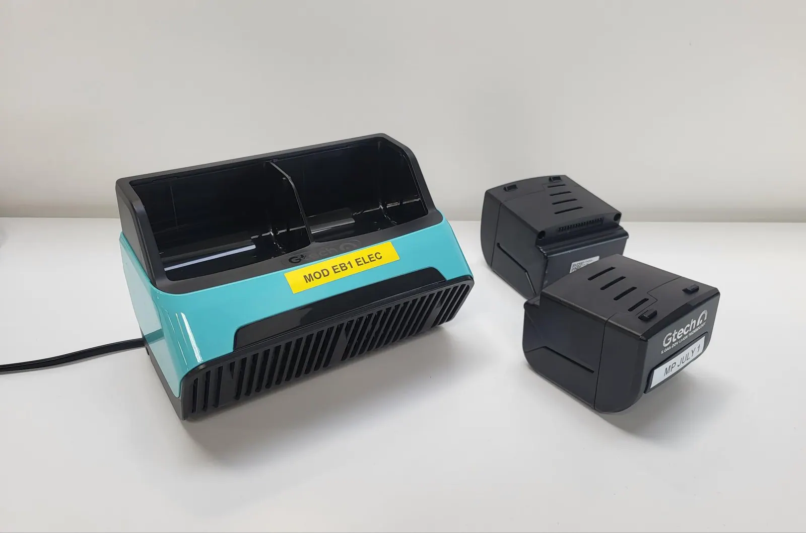
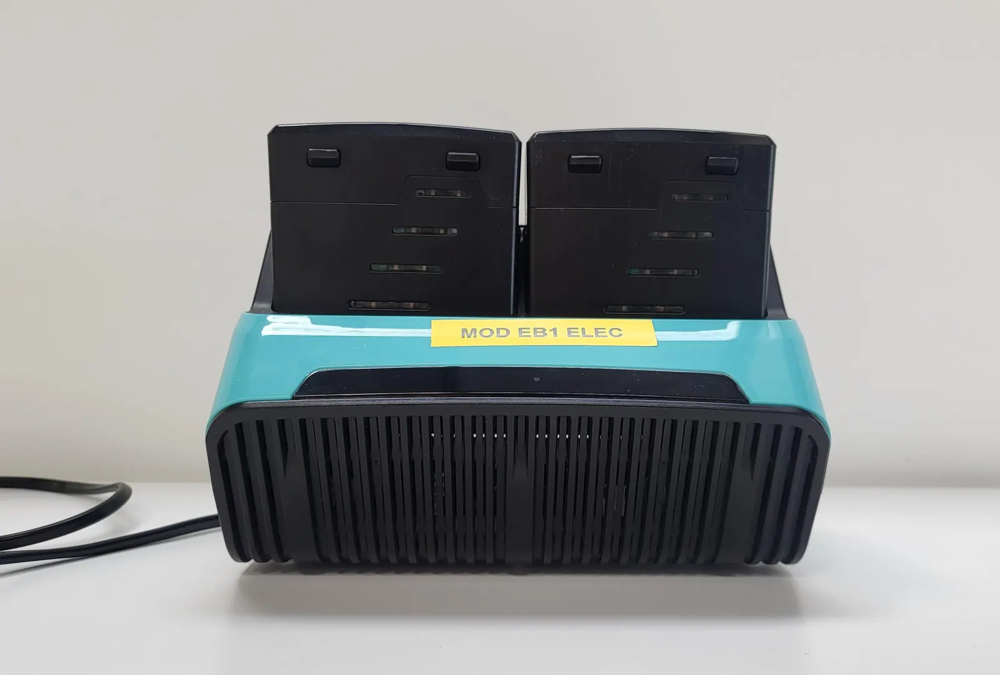
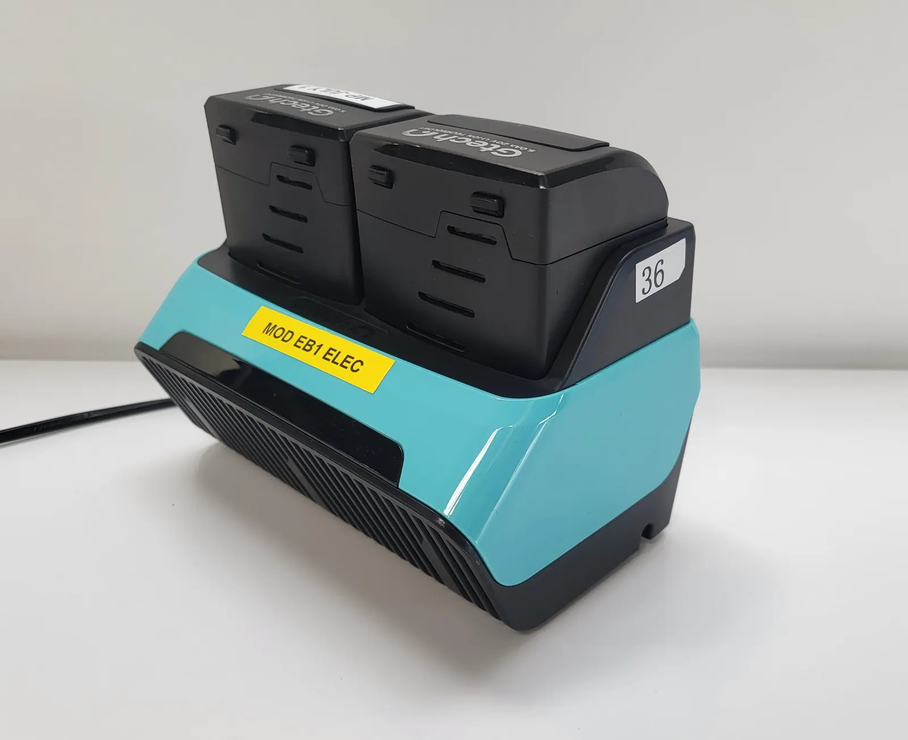
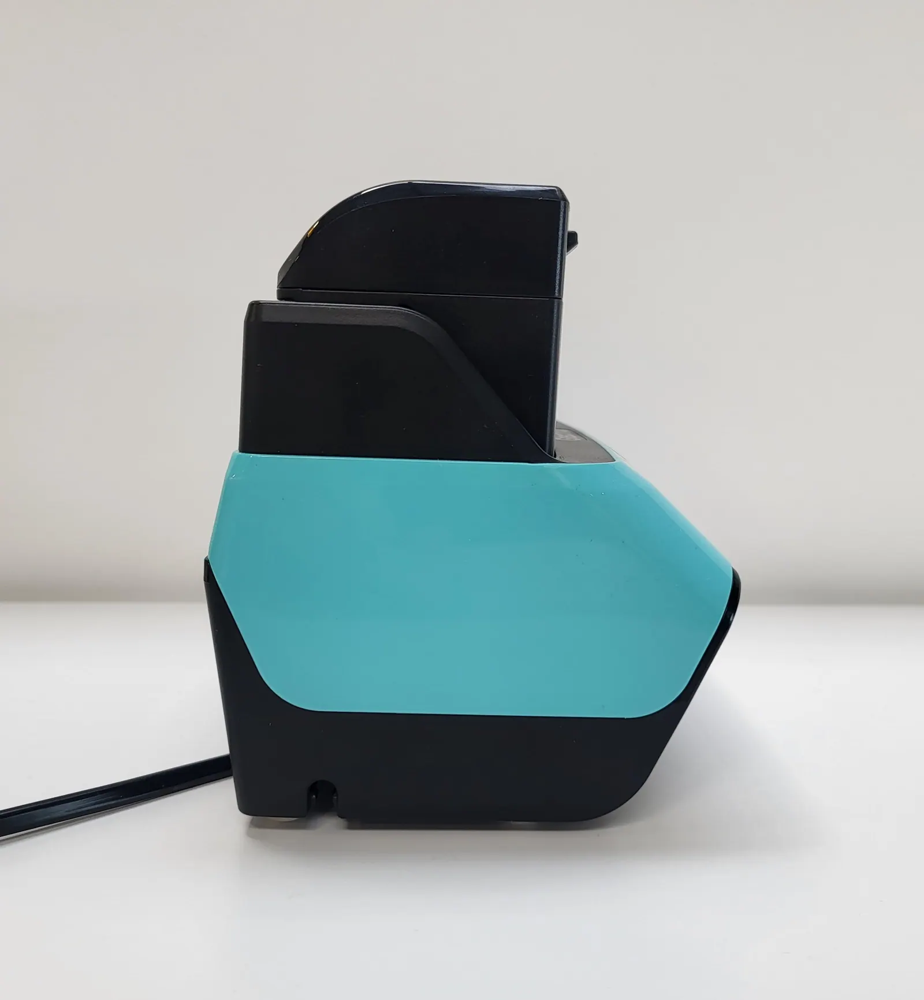